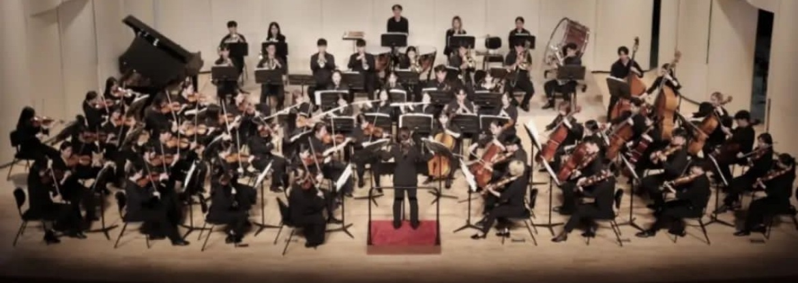
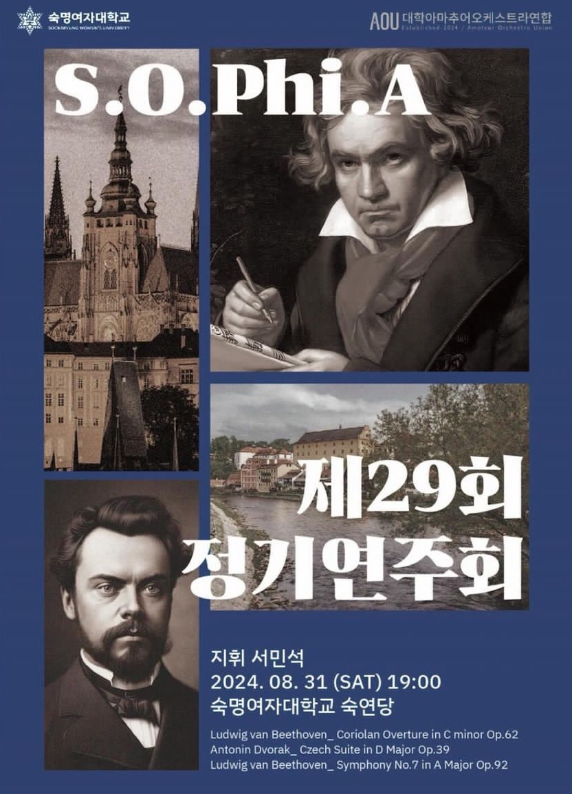
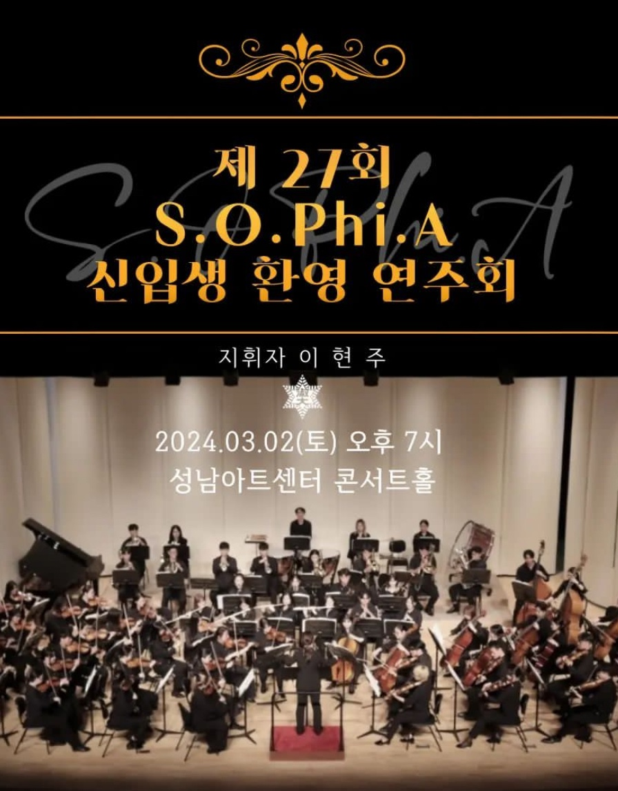
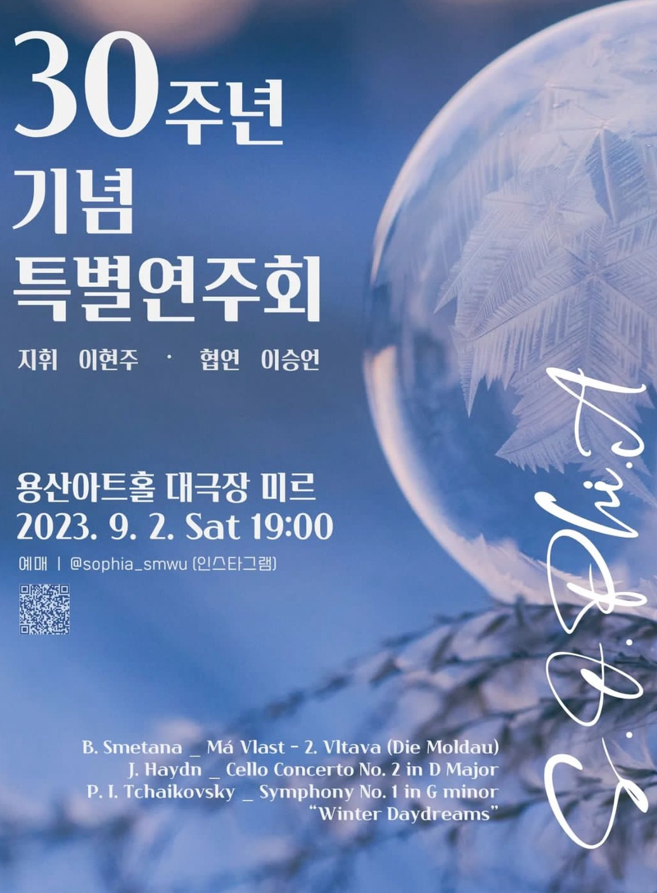
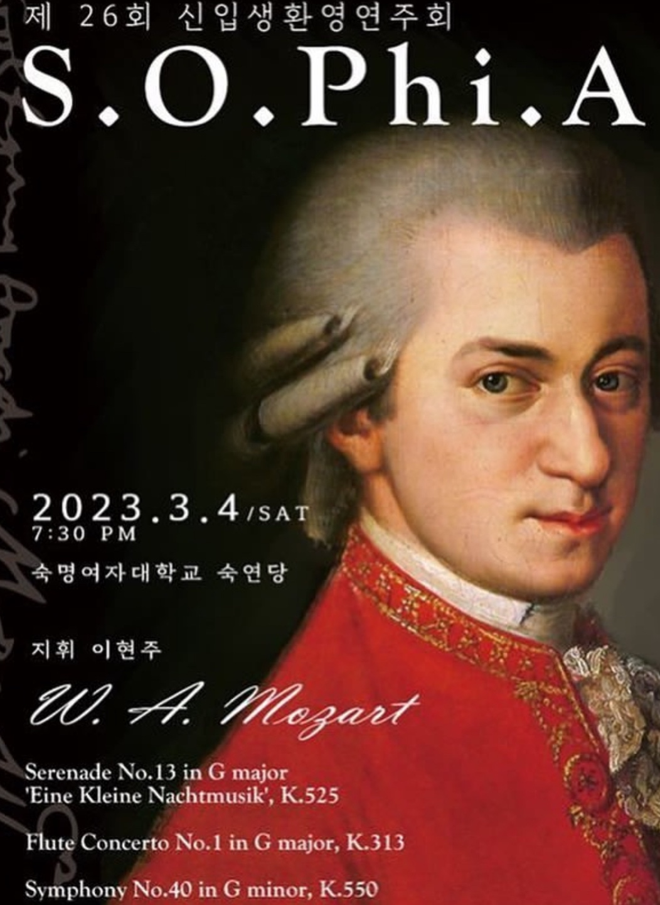
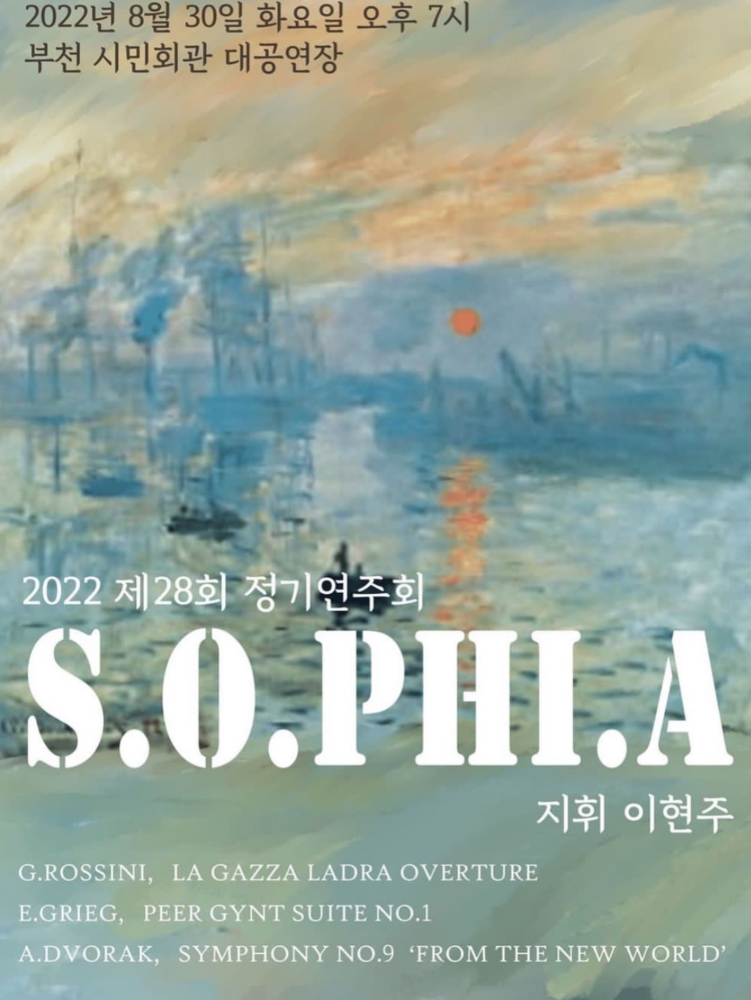

“함께 연주하며 만들어가는 하모니를 통해 깊은 감동을 전하는 오케스트라 동아리"
숙명여자대학교 중앙 오케스트라 동아리 소피아(S.O.Phi.A)는 음악을 사랑하는 비전공자들이 모여
아름다운 하모니를 만들어가는 아마추어 오케스트라입니다.
매년 두 차례의 정기 연주회를 통해 클래식 음악뿐만 아니라 영화, 드라마 OST 등 다양한 장르의 곡을 연주하며
관객들에게 감동을 선사하고 있습니다.
방학 중 주 3회의 연습과 음악캠프를 통해 단원들의 실력을 향상시키고,
연습 후에는 단원들 간의 친목을 도모하는 시간을 가지며 끈끈한 팀워크를 자랑합니다.
소피아는 음악에 대한 열정과 애정을 가진 숙명인이라면 누구나 참여할 수 있는 열린 동아리로,
함께 연주하며 만들어가는 하모니를 통해 깊은 감동을 전하고자 합니다.
“함께 연주하며 만들어가는 하모니를 통해 깊은 감동을 전하는 오케스트라 동아리"
숙명여자대학교 중앙 오케스트라 동아리 소피아(S.O.Phi.A)는 음악을 사랑하는 비전공자들이 모여
아름다운 하모니를 만들어가는 아마추어 오케스트라입니다.
매년 두 차례의 정기 연주회를 통해 클래식 음악뿐만 아니라 영화, 드라마 OST 등 다양한 장르의 곡을 연주하며
관객들에게 감동을 선사하고 있습니다.
방학 중 주 3회의 연습과 음악캠프를 통해 단원들의 실력을 향상시키고,
연습 후에는 단원들 간의 친목을 도모하는 시간을 가지며 끈끈한 팀워크를 자랑합니다.
소피아는 음악에 대한 열정과 애정을 가진 숙명인이라면 누구나 참여할 수 있는 열린 동아리로,
함께 연주하며 만들어가는 하모니를 통해 깊은 감동을 전하고자 합니다.





1994 숙명여자대학교 SOPHIA 창단
2019 제 25회 정기연주회
2019.09.08 지휘 | 박예리 악장 | 정지은 협연 | 이연주
2020 제 24회신입생 환영 연주회, 제 26회 정기연주회
2020.04.18 지휘 | 이동우 협연 | 정지윤, 김정수
2020.09.12 지휘 | 이동우 협연 | 손자앵
2021 제 27회 정기연주회
2021.09.12 비대면 정기연주회
2022 제 25회 신입생 환영 연주회, 제 28회 정기연주회
2022.03.19 지휘 | 이현주
2022.08.30 지휘 | 이현주
2023 제 26회 신입생 환영 연주회, 30주년 기념 특별연주회
2023.03.04 지휘 | 이현주
2023.09.02 지휘 | 이현주 협연 | 이승언
2024 제 27회 신입생 환영 연주회, 제 29회 정기연주회
2024.03.02 지휘 | 이현주
2024.08.31 지휘 | 서민석